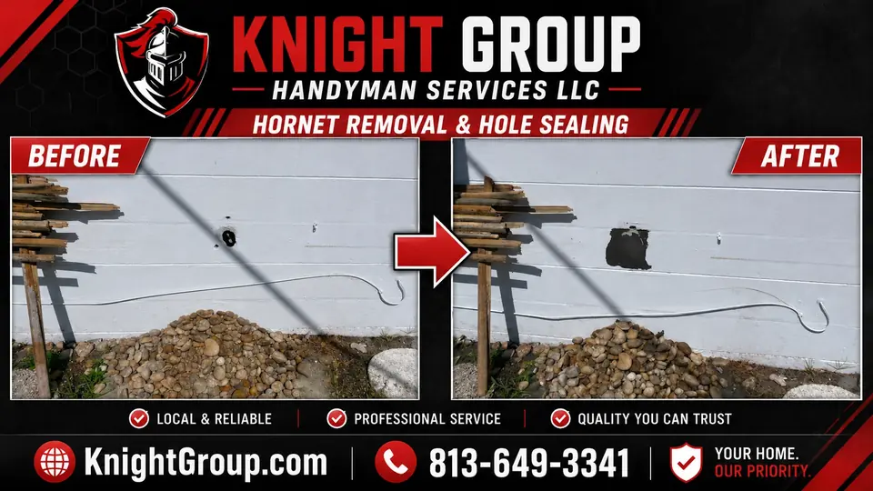
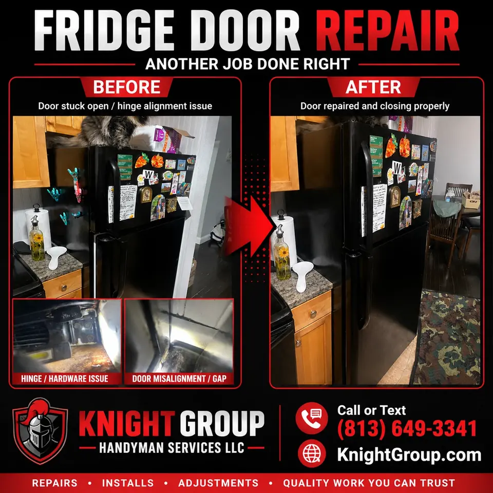

Hole in wall repair
From doorknob impacts to outlet moves — patch, tape, mud, and texture for paint-ready walls.
Hole in wall repair
From doorknob impacts to outlet moves — patch, tape, mud, and texture for paint-ready walls.
Wall and ceiling openings we restore

Hole size dictates method — a patch kit alone fails on openings larger than a fist without proper backing.
- Doorknob and corner impact holes in hall drywall
- Outlet and switch moves leaving oversized cutouts
- Removed wall-mount TV anchors and bracket rows
- Old intercom and alarm panel scars
- Ceiling holes after smoke detector relocations
- HVAC register enlargements needing surround patches
- Garage damage from vehicle mirror clips
- Rental damage documentation with photo pairs
Invisible patch goals
We hide screws in studs, taper mud far enough that raking light does not reveal humps, and prime before owners color-match. Texture follows when walls are not already smooth coat.
Hole in wall repair from impacts to outlet moves

Doorknob punches, furniture scuffs, and old anchor holes multiply in busy households. Knight Group restores walls with backer, tape, mud, and texture so hole in wall repair jobs finish paint-ready across Safety Harbor and Pinellas County.
Hole sizes and approaches
- Small nail and anchor fills with minimal sanding
- Medium holes with California patch or backer board techniques
- Large openings after outlet relocations or old intercom removals
- Ceiling punctures from fan swaps and duct work
- Garage and rental unit damage before inspections
Texture and paint decide whether patches vanish

Flat paint hides less than eggshell or satin. We feather wider on glossy or dark colors and recommend texture matching when orange peel or knockdown dominates the wall.
More wall work
Drywall repair, drywall and paint repair, interior painting.
Wall damage in rentals and family homes

Move-out inspections in Largo apartments frequently list doorknob holes and removed TV anchors — we batch repairs with texture and paint for keys-return deadlines.
Owner-occupied Safety Harbor homes with kids and pets benefit from durable corner bead reinforcement when damage repeats in the same hall location.
Wall patch estimates
Include a ruler in photos of holes and note adjacent texture type if known. Ceiling patches should mention any active roof or plumbing leaks already repaired.
Frequently asked questions
Common questions homeowners ask before booking this type of work in Pinellas County.
Can you fix a doorknob hole in drywall?
Yes — impact holes are among the most common wall repairs we handle.
How big a hole can you patch?
From nail pops to large openings after outlet moves — method depends on size and location.
Do you repair holes in ceilings?
Yes — with appropriate backing and texture blending when needed.
Will the repair be ready for paint?
Yes — patches are sanded and primed when paint is included or requested.
Can you repair holes in rental units quickly?
Yes — landlords often send photo sets for batch quoting across units.
Do you fix multiple holes in one room?
Yes — bundling reduces per-hole setup time.


Ready to schedule?
Tell us what needs attention and where the property is located.